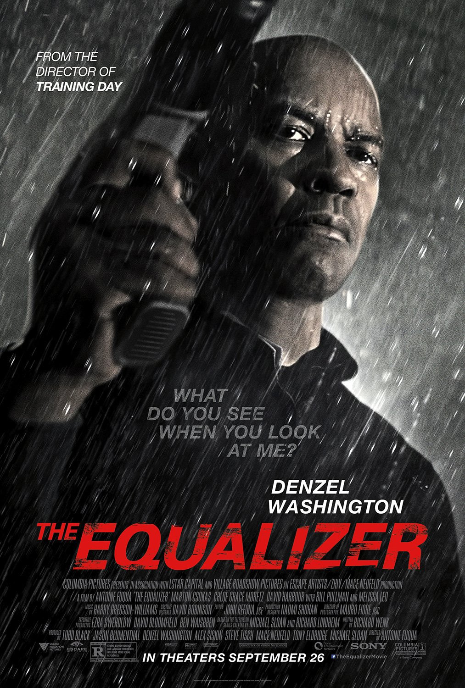
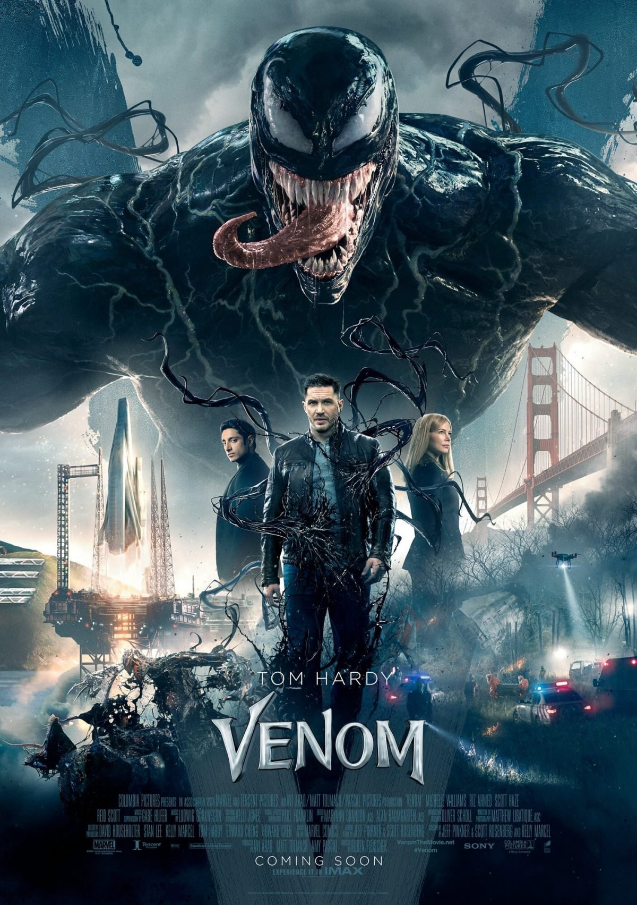
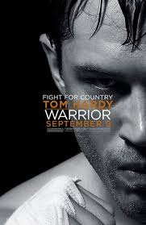

My favourite movies

Title:The Great Equalizer
The Equalizer is a 2014 American vigilante action thriller film directed by Antoine Fuqua, loosely based on the
1980s TV series of the same name.
It stars Denzel Washington, Marton Csokas, Chloë Grace Moretz, David Harbour, Bill
Pullman and Melissa Leo.
Principal photography began in June 2013 in Massachusetts. It was the first film to have Village Roadshow Pictures
co-finance the deal with Sony Pictures since Saving Silverman in 2001.
The film had its world premiere at 2014 Toronto
International Film Festival on September 7, 2014, and was released worldwide on September 26 2014.
Genre:Thriller
Date:2014

Title:Never back down
Never Back Down is a 2008 martial arts film directed by Jeff Wadlow and starring Sean Faris, Amber Heard, Cam Gigandet,
and Djimon Hounsou.
The movie was released on March 14, 2008.
The film is about a frustrated and conflicted teenager
who arrives at a new high school to discover an underground fight club.
Genre:Sport
Date:2008

Title:Venom
When Eddie Brock acquires the powers of a symbiote, he will have to release his alter-ego "Venom" to save his life.
Genre:Fantasy
Date:2018

Title:Warrior
Warrior is a 2011 American sports drama film directed by Gavin O'Connor and starring Tom Hardy and Joel Edgerton as two
estranged brothers whose entrance into a mixed martial arts tournament makes them come to terms with their lives and
each other.
Genre:Sport
Date:2011
Home